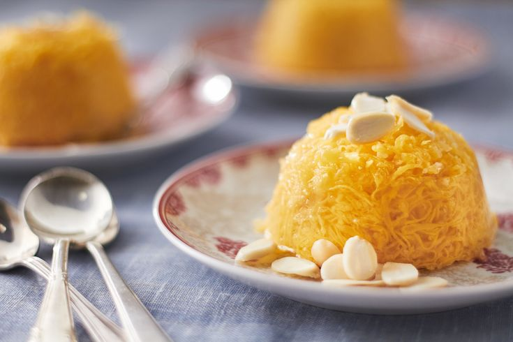

Fios de Ovo
Um doce tradicional português e brasileiro, feito com gemas e calda de açúcar, perfeito para decorar bolos e sobremesas.

Ingredientes
Rende 200g
- 6 gemas de ovo
- 2 xícaras de açúcar
- 1 xícara de água
- 1 colher de chá de essência de baunilha (opcional)
Modo de Preparo
Tempo estimado: 30 minutos
- Prepare uma calda com o açúcar e a água, levando ao fogo médio até atingir ponto de fio (quando você levanta a colher, escorre lentamente).
- Bata levemente as gemas, coando-as para retirar a película.
- Com um funil de fios ou um saco de confeitar fino, despeje as gemas na calda fervente em movimentos circulares, formando os fios.
- Cozinhe por alguns segundos, retire com uma escumadeira e mergulhe em água fria para interromper o cozimento.
- Escorra bem e utilize para decorar bolos, pudins ou outras sobremesas.
Dica do Chef: Para fios mais finos e delicados, passe as gemas por uma peneira bem fina e use uma temperatura constante na calda.